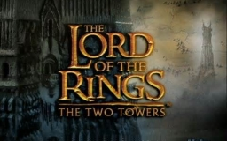
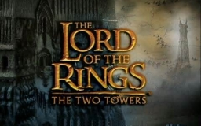
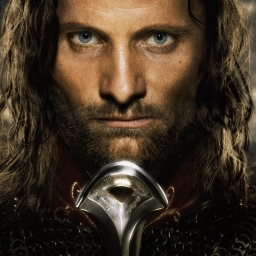
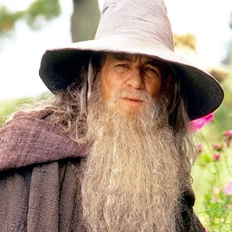

 
U treæem dijelu, Povratak kralja, nastavljaju se avanture Gandalfa, Aragorna, Gimlija i Legolasa usporedno s Frodovim i
Samovim. Kao što je reèeno u prvoj knjizi, Družina pomaže u posljednjoj bitki protiv Sauronovih snaga, ukljuèujuæi i opsadu
Minas Tiritha u Gondoru i posljednjoj bitki za život i smrt pred Crnim Dverima Mordora, gdje se savez Gondora i Rohana
oèajnièki bori protiv Sauronove vojske, da bi im odvratili pažnju od Prstena, te tako dajuæi vremena Frodi da ga uništi.
U drugoj knjizi, Sam spašava Froda iz zarobljeništva. Nakon mnogo patnje, stižu do Klete gore, dok ih Golum prati.
Meðutim, iskušenje Prstena se pokaže preveliko za Froda i on ga zadržava za sebe, ne želeæi ga uništiti. Meðutim, Golum ga
napada i uspijeva mu odgristi Prsten sa prsta. Sluðen uspjehom, Golum se posklizne i zajedno s Prstenom pada u vrelu lavu,
gdje Prsten konaèno biva uništen.
 |  |
|  |